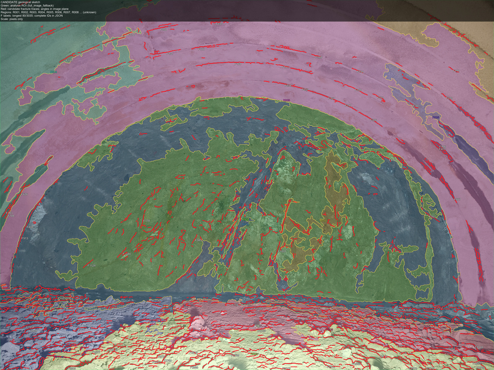

掌子面正射影像
4096 × 3072 px · 未标定

原始影像
图像坐标 · 4096 × 3072
DELIVERABLE / 04
掌子面素描成果表
GS-RK4-970-027
侨城东路隧道 · 掌子面 RK4+970 · 自动提取结果
| 掌子面编号 | RK4+970 | 采集日期 | 2026-10-27 |
|---|
| 采集方式 | 多视角摄影测量 | 影像分辨率 | 4096 × 3072 px |
|---|
| 岩性分区 | 10 个候选区域 | 结构面迹线 | 3,035 条候选 |
|---|
| 迹线总长 | 98,883 px | 迹线密度 P21 | 0.00786 px⁻¹ |
|---|
| 尺度标定 | 未标定 | 坐标基准 | 原始图像像素 |
|---|
| 成果状态 | 待地质复核 | 成果版本 | V1.0 / 自动生成 |
|---|
影像配准通过
分区完整性10 / 10
迹线矢量化3,035
尺度标定未标定
AUTO
SKETCH
PIPELINE / PHOTOGRAMMETRY → SEGMENTATION → VECTOR TRACE → SKETCH
00:40:12
SYSTEM ONLINE
AUTONOMOUS SURVEY
侨城东路隧道RK4+970 · 掌子面 P-03
00:00:00
01
开机与自主建图AUTONOMOUS MAPPING
MODESTANDBY
SPEED0.00 m/s
DIST12.6 m
设备自主启动，实时构建隧道三维地图。
00:0001 建图02 行进03 采集04 成果01:00
测量位置已到达ARRIVED / TARGET LOCKED
PRODUCT CONCEPT FILM / 60 SEC
隧道智能
地质素描机器人
自主建图 · 精准到位 · 摄影测量 · 自动素描
侨城东路隧道 · RK4+9702026 / CONCEPT DEMO